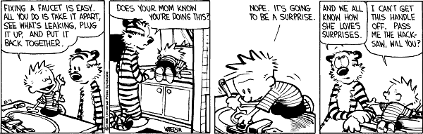
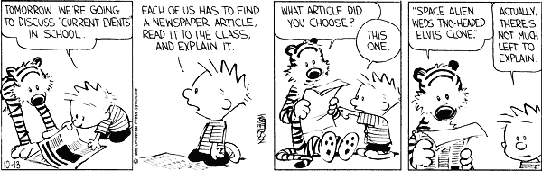
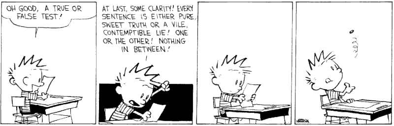
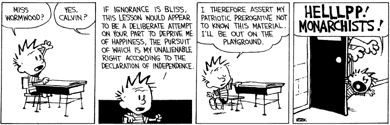
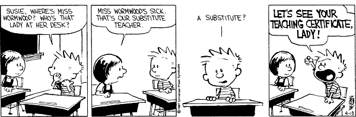
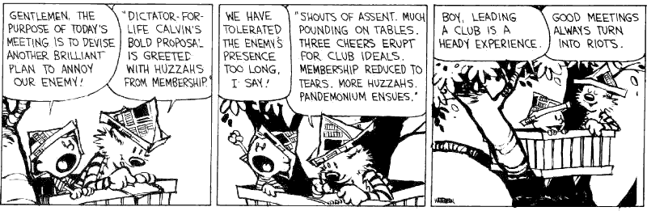

On ‘Narratives of Masculinity’ at the international seminar ‘Exploring Masculinities – A South Asian Travelling Seminar’ organised by the Departments of English, and Comparative Literature and the School of Women’s Studies, Jadavpur University in collaboration with Aakaar, New Delhi and United Nations Women, 27.03.2008
As a BA (Hons.) student (2004-2007)
Co-authored a paper ‘Guess Who's Coming as Dinner? The Classical and the Colonial Cannibal’ at the international colloquium on ‘Food: Representation, Ideology and Politics’ organised by the Department of English, Jadavpur University, 16 -18 November 2006, with Vinayak Das Gupta, Rwitayan Mukherjee and Arnab Banerji
Co-authored a paper on John Lennon titled ‘Working-Class Hero: Self-Representation in Popular Culture’ at the All-India Students’ Seminar on ‘Breaking the Mould: Gender, Genre, Representation’ organised by the Department of English, Jadavpur University, 31 March-1 April 2006, with Vinayak Das Gupta and Rwitayan Mukherjee ↩
Academic workshops conducted
| Year | Area | Co-conductors, if any | Title of workshop | Details of workshop |
|---|---|---|---|---|
| 2016 | Digital Cultures | Purbasha Auddy | ‘#SpottingData’ | At the international Internet Researchers’ Conference organised at Jawaharlal Nehru University, New Delhi, by the Centre for Internet and Society, Bengaluru, 26.02.2016-28.02.2016 |
Academic publications
 ↩
↩
Full-time non-teaching work experience
School of Cultural Texts and Records, Jadavpur University, October 2009-August 2013
April 2011-August 2013
Job designation: Project Supervisor
Project: Bichitra: Online variorum edition of the works of Rabindranath Tagore
The Principal Investigator of this project was Professor Sukanta Chaudhuri, School of Cultural Texts and Records. The project was funded by the Ministry of Culture, Government of India.
October 2010-March 2011
Job designation: Project Fellow
Project: Digital Archive of Early Bengali Drama
The Principal Investigator of the project was Professor Sukanta Chaudhuri, School of Cultural Texts and Records. The project was funded by the Endangered Archives Grant of the British Library, supported by the Arcadia foundation.
October 2009-September 2010
Job designation: Project Fellow
Project: Producing XML-TEI transcripts of the manuscripts of the 19th-century Australian poet, Charles Harpur
The Principal Investigator of the project at Jadavpur University was Professor Sukanta Chaudhuri, School of Cultural Texts and Records. The project was funded by and the final editing and website creation was carried out by the University of Sydney and the University of New South Wales, Canberra, with Professor Paul Eggert as the Principal Investigator. This was perhaps the first project in India to use XML-TEI. ↩
Teaching experience
In permanent posts
2017-present: Assistant Professor, Department of English, Ananda Mohan College, University of Calcutta
In non-permanent posts
Guest Faculty, MA course, Department of English, Loreto College, University of Calcutta, 2016-2019
As a result of being a UGC-NET Research Fellow for a PhD in the Department of English, Jadavpur University
Took regular classes in the undergraduate extra-departmental courses offered by the Department of English for students of the Faculty of Arts, Jadavpur University, 2014-2017
Took regular classes in the undergraduate compulsory English course in various departments in the Faculty of Engineering and Technology, Jadavpur University, 2014-2017
Took a class on ‘Electronic texts’ as part of the MPhil coursework in the Department of English, Jadavpur University, 06.05.2014
As a result of working for the School of Cultural Texts and Records, Jadavpur University
Took regular classes in the Post-Graduate Diploma in ‘Digital Humanities and Cultural Informatics’ course in the School of Cultural Texts and Records, 2013-2018
Took a class on ‘Variorum editions and Rabindranath’ as part of the MA ‘Book History’ course in the Department of English, Jadavpur University, 24.10.2011↩
Teaching eligibility examinations passed
Passed the University Grants Commission National Eligibility Test for Junior Research Fellowship and Eligibility for Lecturership (NET-JRF) in English in December 2012
Passed the National Eligibility Test for Lecturership (NET-LS) only in English in June 2012 ↩
Awards/ grants received

2013-2017: UGC NET-JRF/SRF in English awarded in December 2012 and held from September 2013 to 2017
2012: Charles Wallace India Trust short-term grant of £1,000 for 2012-2013 (while working for the School of Cultural Texts and Records)
Conference assistance grants
Folger Shakespeare Library grant of US $ 1,684 and boarding from the Andrew W. Mellon Foundation for attending the ‘Digital Rough Magic: Advancing the Miranda Digital Asset Platform’ workshop in 2018
Jadavpur University national research travel grant of Rs. 5,000 for 2016-2017
Centre for the Study of Culture and Society, Bengaluru Digital Innovation Fund of Rs. 10,000 and boarding for attending the international Internet Researchers’ Conference organised at Jawaharlal Nehru University, New Delhi, by the Centre for Internet and Society, Bengaluru, 2016
Centre for Internet and Society, Bengaluru award of Rs. 5,000 for being selected to contribute to the ‘Studying Internets in India’ essay series, 2015
Jadavpur University national research travel grant of Rs. 5,000 for 2015-2016
Comité International pour la Documentation/ International Committee for Documentation (CIDOC) bursary of US $ 1420 from the Getty Foundation for attending the annual international conference of CIDOC in 2015
Jadavpur University international research travel grant of Rs. 20,000 for 2012-2013↩
Professional development courses done
2020: Online Faculty Induction Programme organised from 21.12.2020 to 28.01.2021 by the UGC-HRDC, Jadavpur University
2020: Online refresher course in English literature and language with special focus on Dalit and North East Indian studies organised from 26.11.2020 to 10.12.2020 by the UGC-HRDC, Jamia Millia Islamia, New Delhi ↩
Visiting Positions held
Visiting Research Associate, Department of Digital Humanities, King’s College, London, 14.09.2012-03.10.2012 (while working for the School of Cultural Texts and Records) ↩
Membership of academic bodies
Life Member, Shakespeare Society of India, Delhi ↩